Доброе утро
Лучик просыпается в светлой комнате и готовится к новому дню.
Маленькая интерактивная история
Лучик — любопытный рыжий кот, Кузя — спокойный вислоухий друг, а Виталик — большой тёмный добряк. Вместе даже самый обычный день превращается в приключение.
Начать историюШесть коротких глав
Лучик просыпается в светлой комнате и готовится к новому дню.
Лучик замечает Кузю во дворе и радостно приветствует друга.
Лучик бежит через комнату, открывает дверь и выходит к Кузе.
Друзья носятся вокруг дерева и прячутся за цветами.
Лучик приглашает Кузю внутрь, и друзья заходят в дом.
После ужина коты устраиваются у окна и отдыхают рядом.
Глава 1 из 6

Мастер демонтажа

Посол из Британии

Пожиратель
Глава 4 · Настоящие моменты
Фотографии из первых проектов собраны в одну живую главу. Выбирай тему — коллаж перестроится сам.
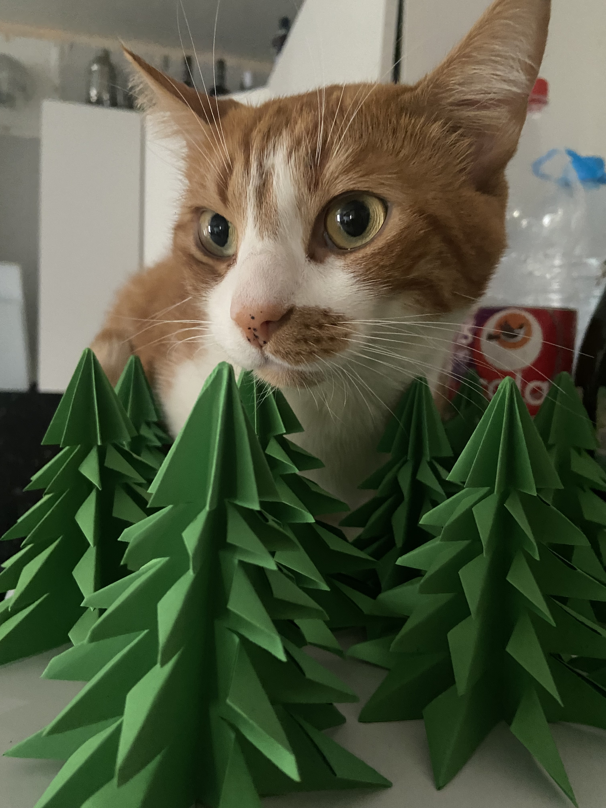
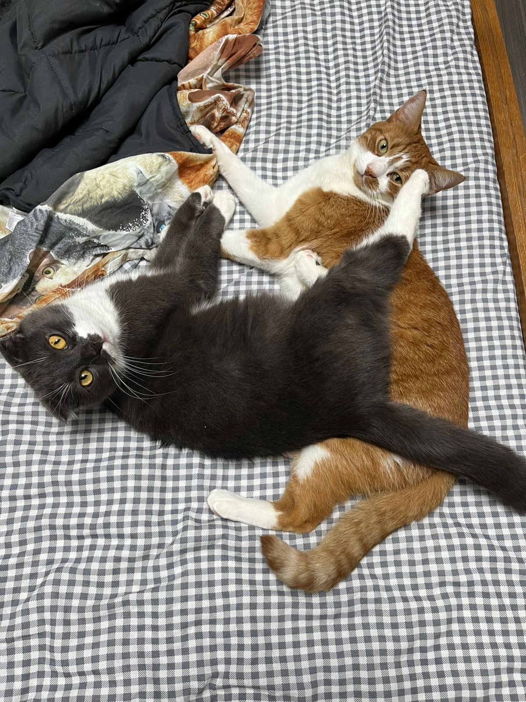
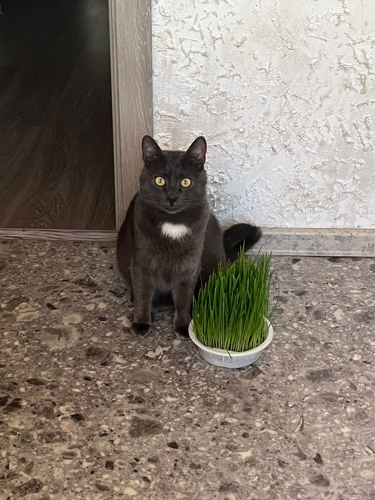
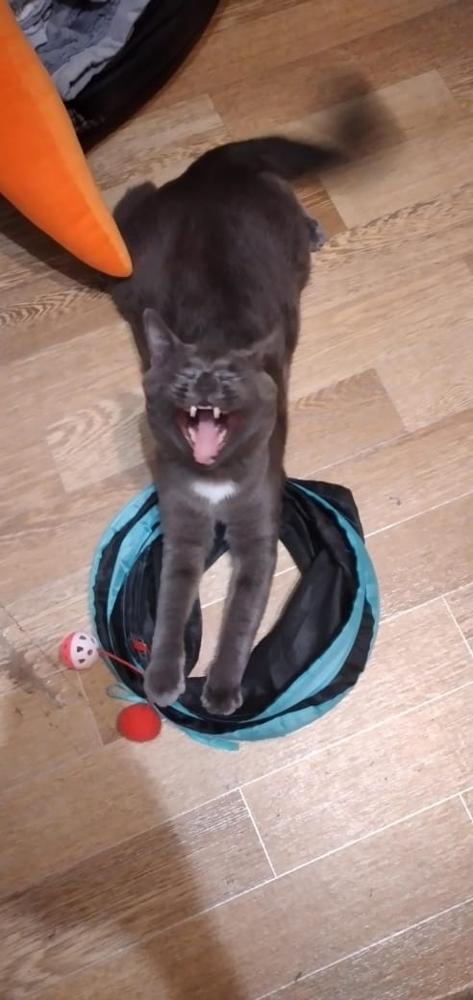
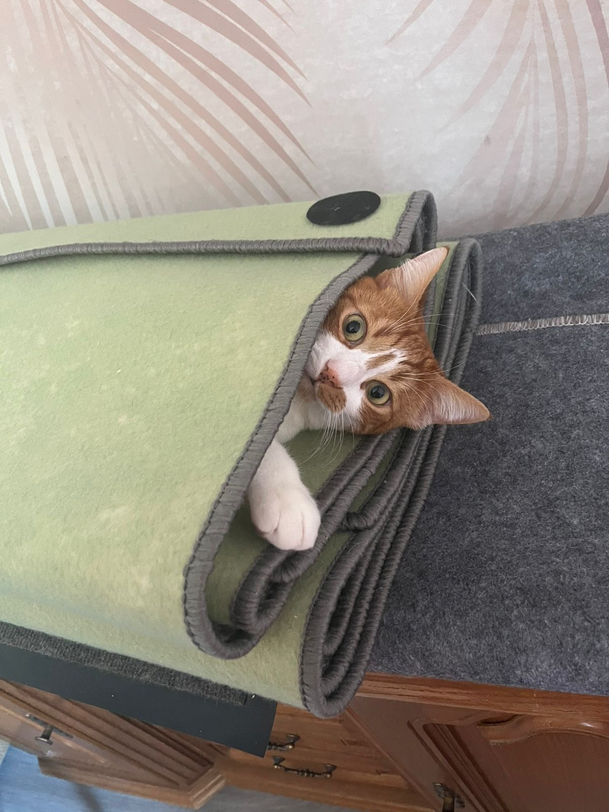
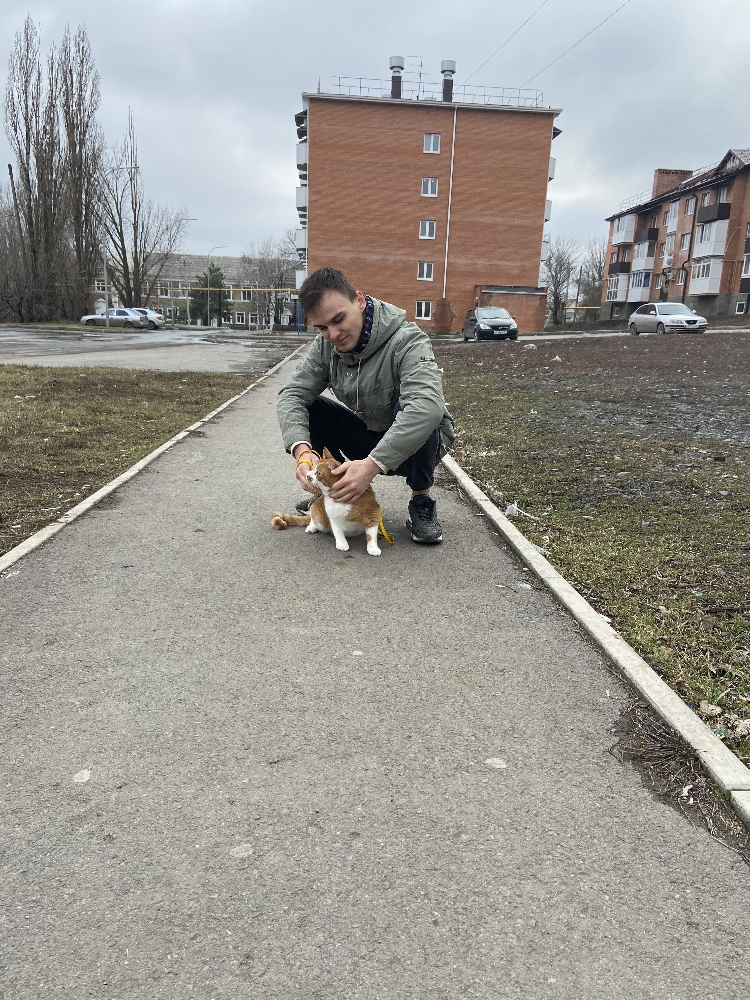
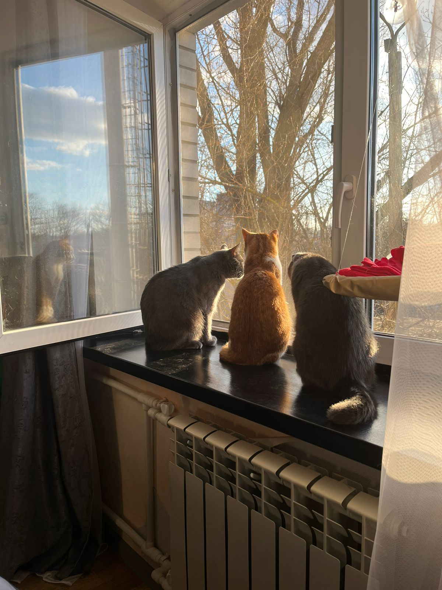
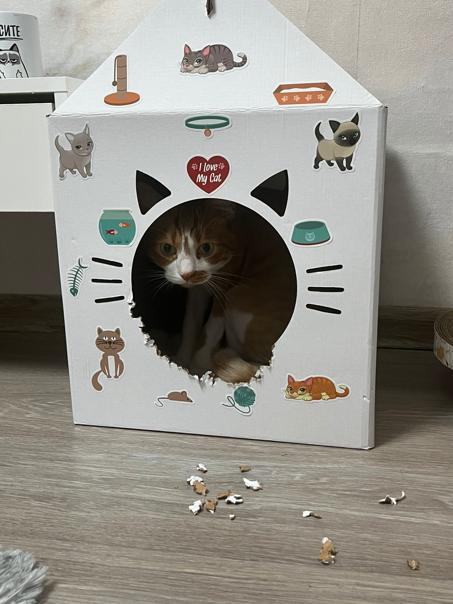
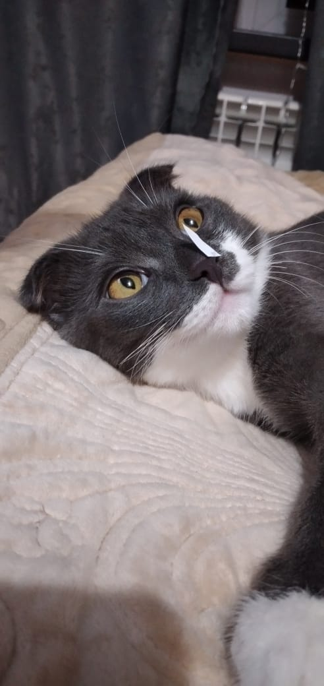
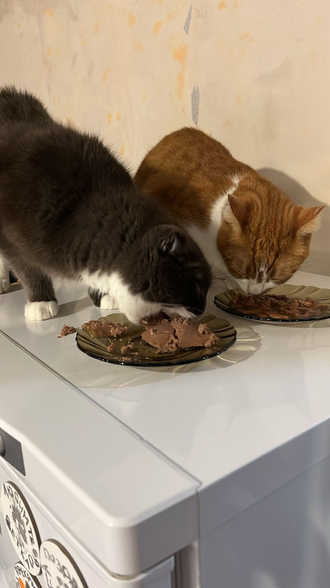
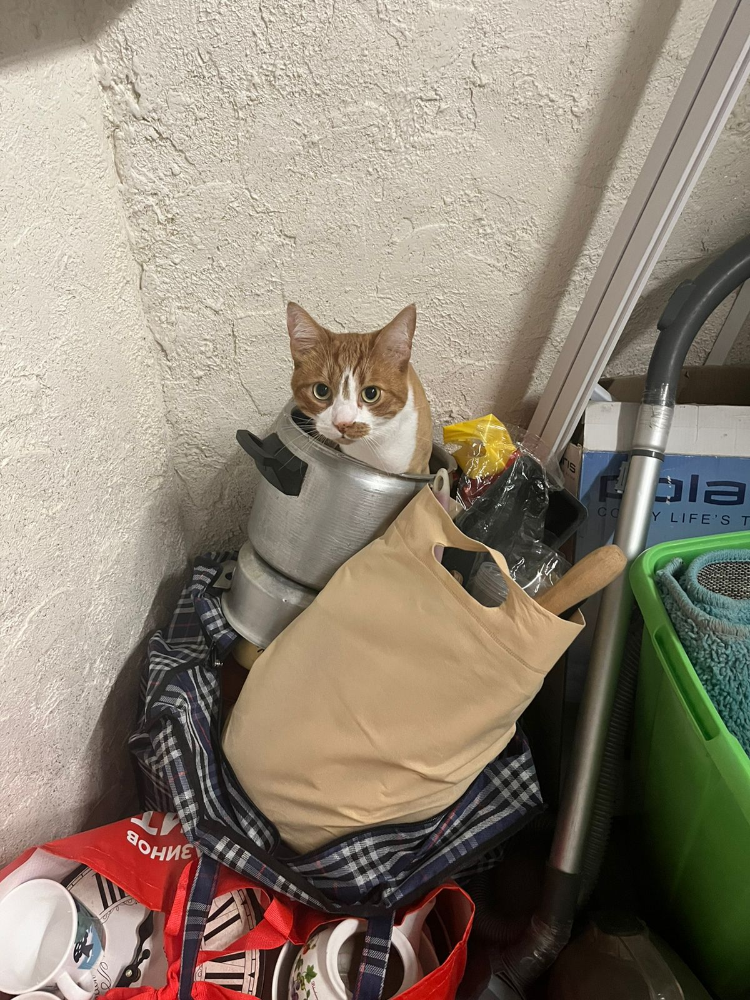
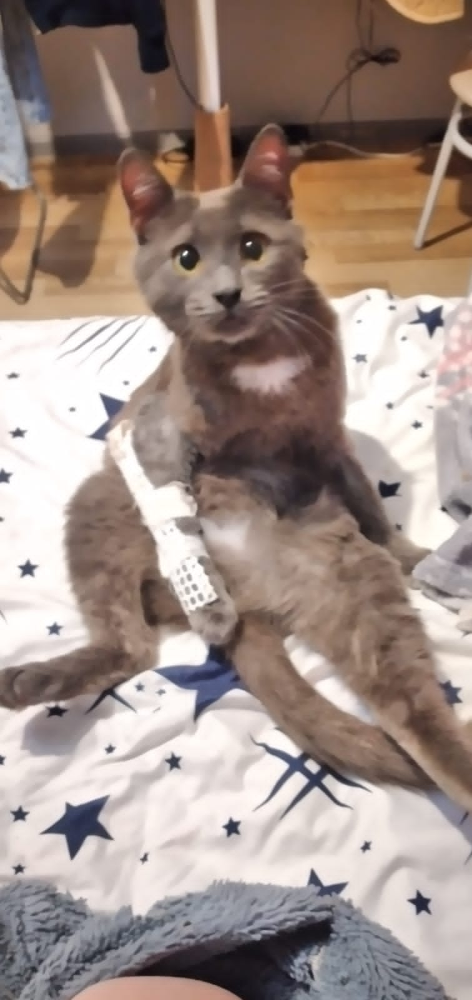
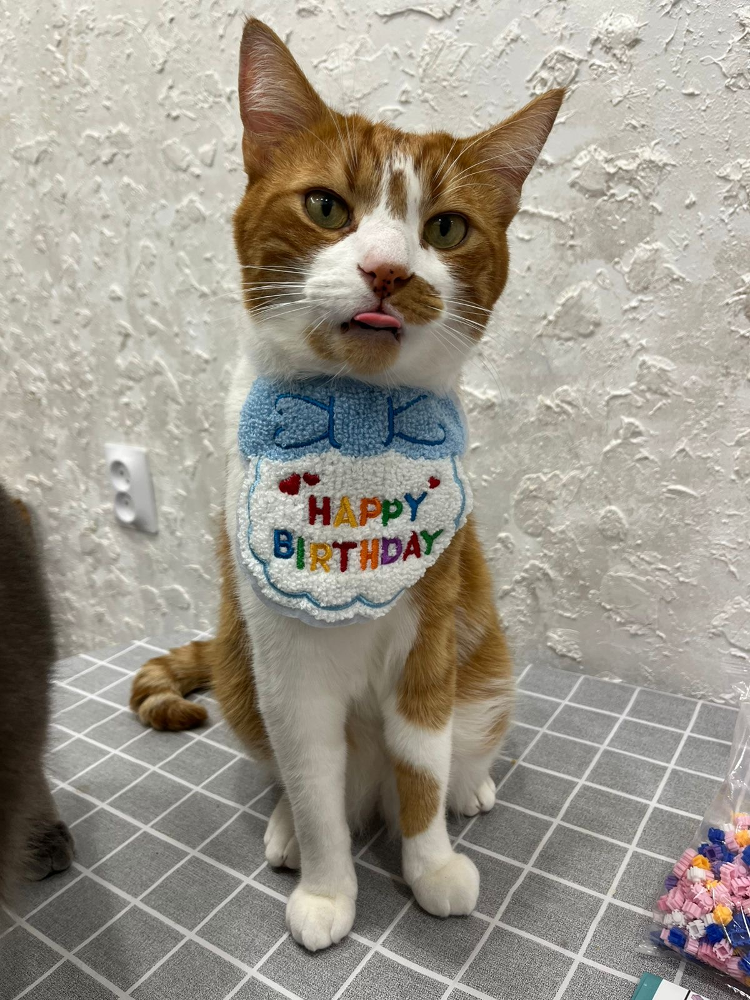
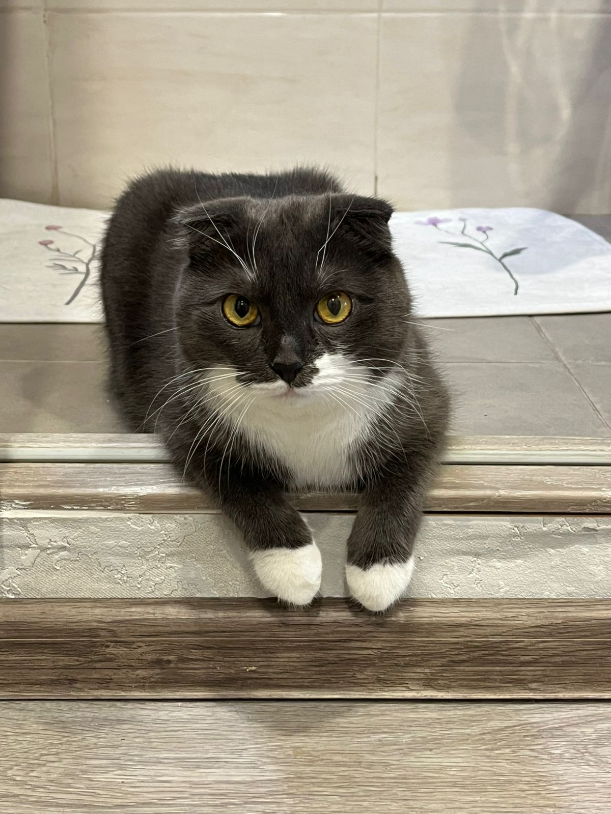